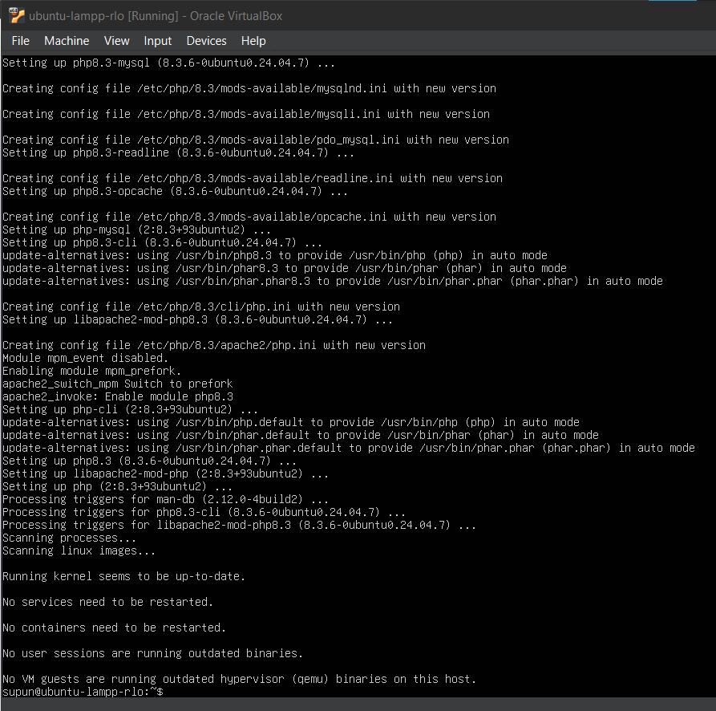
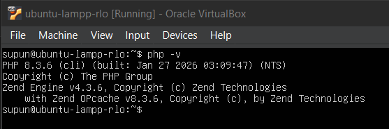
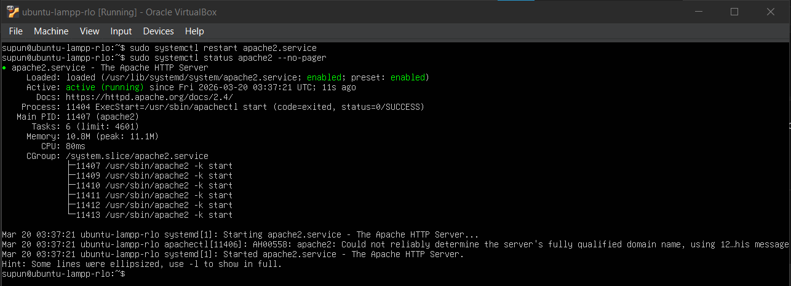
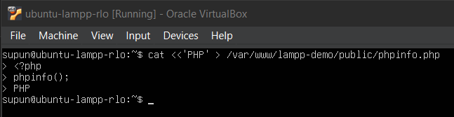
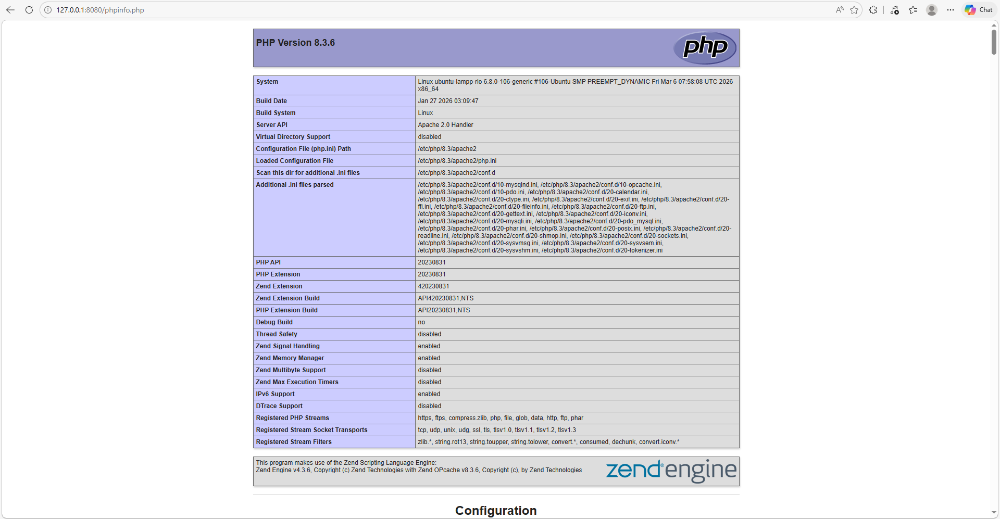
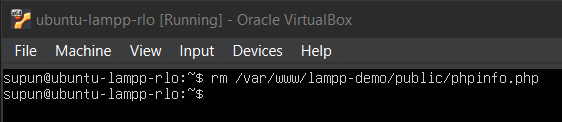

Hands-on module
Module 5: Install PHP and Connect It to Apache
Install PHP, the Apache PHP module, and the MariaDB driver, then confirm PHP executes in the browser.
Module progress
0 of 0 checkpoints completed
What you will complete
- Install PHP and the required packages.
- Restart Apache so PHP execution is active.
- Confirm that PHP runs correctly.
Steps
Install PHP packages
PHP adds server-side processing to the Apache site you created in the last module. Install the runtime, the Apache integration module, command-line support, and the MariaDB driver in one pass.
1. Install the required packages
- Run
sudo apt install php libapache2-mod-php php-cli php-mysql -y.Install PHP and common packages for this RLOsudo apt install php libapache2-mod-php php-cli php-mysql -y
PHP package install: Let the package installation finish completely. A successful run returns to the shell prompt after the PHP runtime, Apache module, CLI tools, and MariaDB driver are configured. - Wait for the installation to complete fully before testing anything in the browser.
- If package installation fails, resolve that problem before moving on to Apache restart or PHP file creation.
2. Know what each package provides
phpinstalls the main PHP runtime.libapache2-mod-phplets Apache execute PHP files directly.php-cligives you thephpcommand in the terminal.php-mysqlprovides the database driver support that the later PHP demo page will need.
3. Verify the CLI installation
- Run
php -vafter installation.Check the PHP version in the shellphp -v
CLI version check: The php -vcommand should report the installed PHP version and confirm that the CLI binary is available from the shell. - Confirm that PHP reports a version number instead of a command-not-found error.
- Capture the PHP version output as evidence that the CLI installation completed successfully.
Restart Apache and test PHP
After installing the Apache PHP module, restart the web server and use a temporary test page to confirm that PHP is being interpreted instead of downloaded as plain text.
1. Restart Apache
- Run
sudo systemctl restart apache2.service.Restart Apache after PHP installationsudo systemctl restart apache2.service - Check the service status after the restart to confirm Apache is active.
Check the Apache service status
sudo systemctl status apache2 --no-pager
Apache restart check: After the restart, confirm that apache2.serviceisactive (running). The common hostname warning in the log output is acceptable here as long as the service remains active. - Do not continue until Apache is active again.
2. Create a temporary PHP test file
- Create
phpinfo.phpinside/var/www/lampp-demo/public.Create a temporary PHP test filecat <<'PHP' > /var/www/lampp-demo/public/phpinfo.php <?php phpinfo(); PHP
PHP test file: The heredoc command writes the temporary phpinfo.phpfile and then returns to the shell prompt with no extra output when it succeeds. - Put only
<?php phpinfo();in the file so the test stays simple. - Save the file and make sure it exists in the same document root used by your virtual host.
3. Test in the browser
- From the host machine, open
http://127.0.0.1:8080/phpinfo.phpin a browser. - Confirm that a PHP information page loads. You should see PHP version details and configuration sections.

Browser PHP test: A successful result shows the PHP information page in the browser, confirming that Apache is executing PHP instead of serving the file as plain text. - If the browser downloads the file instead of displaying PHP output, stop and fix the Apache PHP integration before continuing.
4. Remove the test page
- Delete
/var/www/lampp-demo/public/phpinfo.phpas soon as you confirm PHP works.Remove the PHP info page after validationrm /var/www/lampp-demo/public/phpinfo.php
Test file removed: Remove phpinfo.phpas soon as the PHP test succeeds. The command normally returns to the prompt without extra output when the file is deleted. - This file exposes detailed server configuration information and should not remain on a deployed system.
- After removing it, reload the main site URL to make sure Apache still serves the site normally.
Troubleshooting
| Issue | What to check |
|---|---|
| Browser downloads the PHP file instead of executing it | Confirm libapache2-mod-php is installed and restart Apache. |
| Blank page in browser | Check /var/log/apache2/lampp-demo-error.log and the main Apache error log. |
| PHP command not found | The package install may have failed. Rerun the package command and confirm network access. |
Evidence to capture
- A screenshot showing the PHP package installation completed successfully.
- A screenshot of
php -vshowing the installed PHP version. - A screenshot of the browser loading
http://127.0.0.1:8080/phpinfo.phpbefore the test file is removed. - A screenshot showing Apache is active after the restart.
- A screenshot confirming that
phpinfo.phpwas deleted after validation.